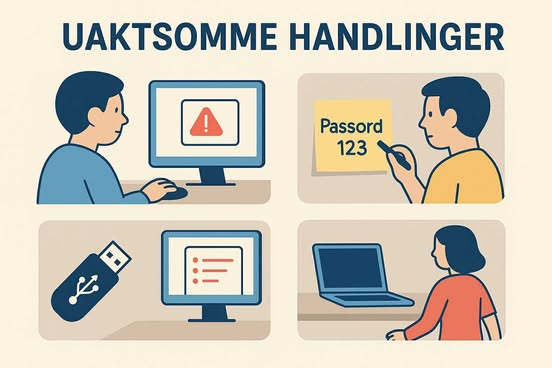

Uaktsomme handlinger
De uaktsomme handlingene innebærer handlinger som gjøres grunnet utaktsomhet eller latskap, det vil si at ofte ved man bedre men tar snarveier for å gjøre det lettere for seg selv.
Eksempler kan innebære å ta med en USB drive med viktig data hjem, la fysiske dokumenter med sensitiv informasjon ligge uten tilsyn på resepsjonen, printere, e.l eller å la pc-en står åpen. Men en av de største feilene man kan gjøre
er å sende ut feil informasjon til feil kunde, og dermed avsløre andres sensitiv informasjon. Dette har tidligere vært den 5. vanligste årsaken til brudd på cybersikkerhet i bedrifter.